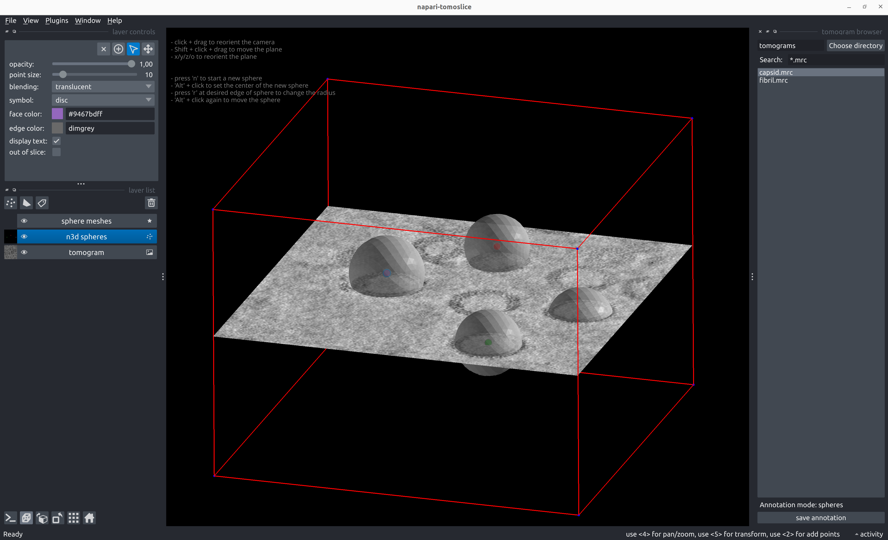
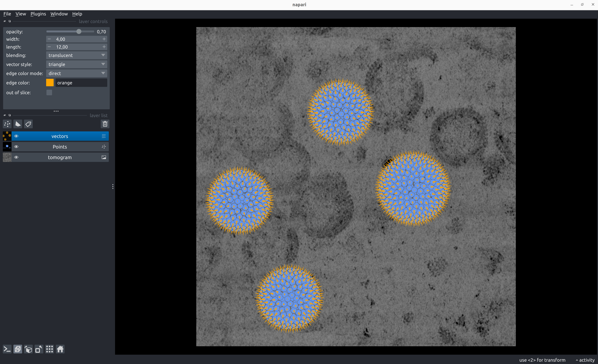

Spheres
Annotate Spheres
napari-tomoslice annotate --tomogram-directory tomograms/ --annotation-directory tomograms/annotations/ --mode spheres
- Load a tomogram using the tomogram browser on the right panel
-
Annotate spheres:
- Shift + click and drag to move the plane up/down
- Press 'x', 'y', 'z', or 'o' to reorient the plane
- Alt + click at the center of the sphere to define the center
- Press 'r' at the edge of the sphere to define the radius
- Alt + click again to move/shift the center of the sphere
- Press 'n' to start a new sphere
- To change the position or radius of a previously added sphere:
- Select the center of the sphere using 'Select points' from the Napari layer control panel on the left
- To move the plane during/after adding spheres:
- Select the tomogram layer from the Napari layer list control panel on the left
-
Save sphere annotations with the 'save annotation' button on the right panel

Example sphere annotation STAR file
data_points
loop_
_x #1
_y #2
_z #3
_radius #4
72.788544 293.405701 196.252716 47.610168
157.126236 458.723114 213.704895 47.610168
243.421997 143.394058 234.561478 46.439350
365.991516 272.661560 228.013626 53.870224
Generate Poses from Sphere Annotations
napari-tomoslice generate-poses spheres --annotations-directory tomograms/annotations/ --output-star-file tomograms/spheres.star --distance-between-particles 10

Example poses STAR file for sphere annotation
data_
loop_
_x #1
_y #2
_z #3
_rot #4
_tilt #5
_psi #6
_tilt_series_id #7
76.125785 293.405701 243.745778 164.508852 4.019451 179.999999 TS_01
256.048907 171.247158 199.613242 -124.944668 138.812321 114.386664 TS_01
214.949151 131.236965 199.947675 -17.199348 138.189603 -23.121101 TS_01
272.977936 133.002502 200.282108 134.430350 137.574362 -160.628863 TS_01
228.477031 171.340479 200.616540 39.587828 136.966266 61.863372 TS_01
235.476528 112.348660 200.950973 124.534250 136.365006 -75.644392 TS_01
270.542232 161.108716 201.285406 69.346477 135.770293 146.847844 TS_01
211.122771 148.706462 201.619839 -26.714926 135.181854 9.340080 TS_01
263.855845 117.397112 201.954272 -5.861923 134.599436 -128.167685 TS_01
245.940018 176.691819 202.288705 121.067224 134.022798 94.324552 TS_01
218.839633 120.323232 202.623138 -115.993090 133.451717 -43.183211 TS_01
277.446075 143.804402 202.957571 -22.871847 132.885977 179.309024 TS_01
217.827222 166.279440 203.292004 112.794377 132.325377 41.801261 TS_01
246.865925 108.929935 203.626436 -159.417033 131.769732 -95.706505 TS_01
264.339877 171.370088 203.960869 138.753360 131.218857 126.785731 TS_01
208.815170 136.841246 204.295302 139.267877 130.672583 -10.722033 TS_01
252.805706 114.694015 199.278809 178.921385 139.442871 -108.105573 TS_01
273.608348 124.699454 204.629735 -6.134311 130.130750 -148.229798 TS_01
...
Convert Poses into Relion 5 STAR files
napari-tomoslice convert-poses --input-file tomograms/spheres.star --output-type relion5 --output-file tomograms/spheres-relion.star
Example Relion 5 STAR file for sphere annotation
data_
loop_
_rlnCoordinateX #1
_rlnCoordinateY #2
_rlnCoordinateZ #3
_rlnAngleRot #4
_rlnAngleTilt #5
_rlnAnglePsi #6
_rlnTomoName #7
76.125785 293.405701 243.745778 164.508852 4.019451 179.999999 TS_01
256.048907 171.247158 199.613242 -124.944668 138.812321 114.386664 TS_01
214.949151 131.236965 199.947675 -17.199348 138.189603 -23.121101 TS_01
272.977936 133.002502 200.282108 134.430350 137.574362 -160.628863 TS_01
228.477031 171.340479 200.616540 39.587828 136.966266 61.863372 TS_01
235.476528 112.348660 200.950973 124.534250 136.365006 -75.644392 TS_01
270.542232 161.108716 201.285406 69.346477 135.770293 146.847844 TS_01
211.122771 148.706462 201.619839 -26.714926 135.181854 9.340080 TS_01
263.855845 117.397112 201.954272 -5.861923 134.599436 -128.167685 TS_01
245.940018 176.691819 202.288705 121.067224 134.022798 94.324552 TS_01
218.839633 120.323232 202.623138 -115.993090 133.451717 -43.183211 TS_01
277.446075 143.804402 202.957571 -22.871847 132.885977 179.309024 TS_01
217.827222 166.279440 203.292004 112.794377 132.325377 41.801261 TS_01
246.865925 108.929935 203.626436 -159.417033 131.769732 -95.706505 TS_01
264.339877 171.370088 203.960869 138.753360 131.218857 126.785731 TS_01
208.815170 136.841246 204.295302 139.267877 130.672583 -10.722033 TS_01
252.805706 114.694015 199.278809 178.921385 139.442871 -108.105573 TS_01
273.608348 124.699454 204.629735 -6.134311 130.130750 -148.229798 TS_01
...